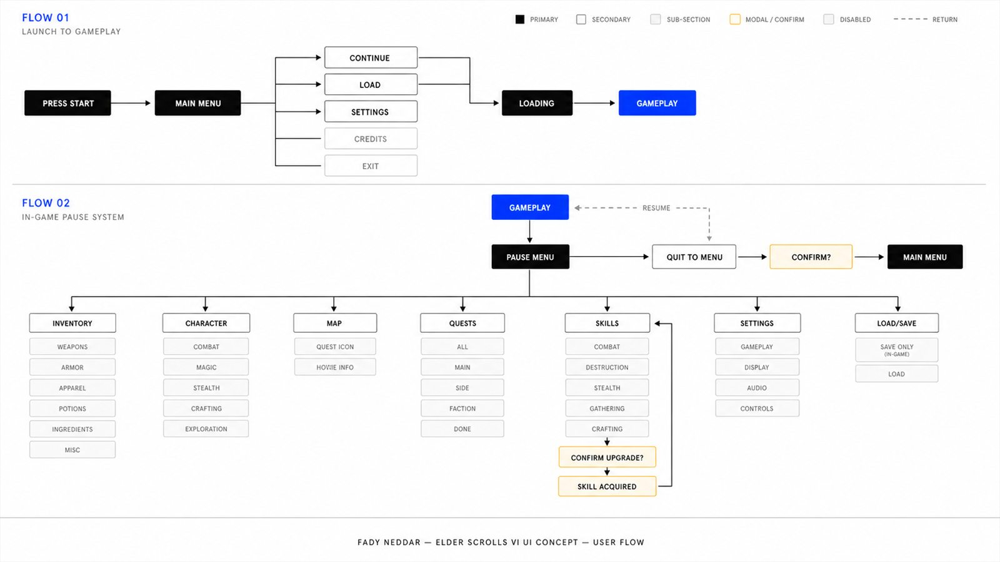
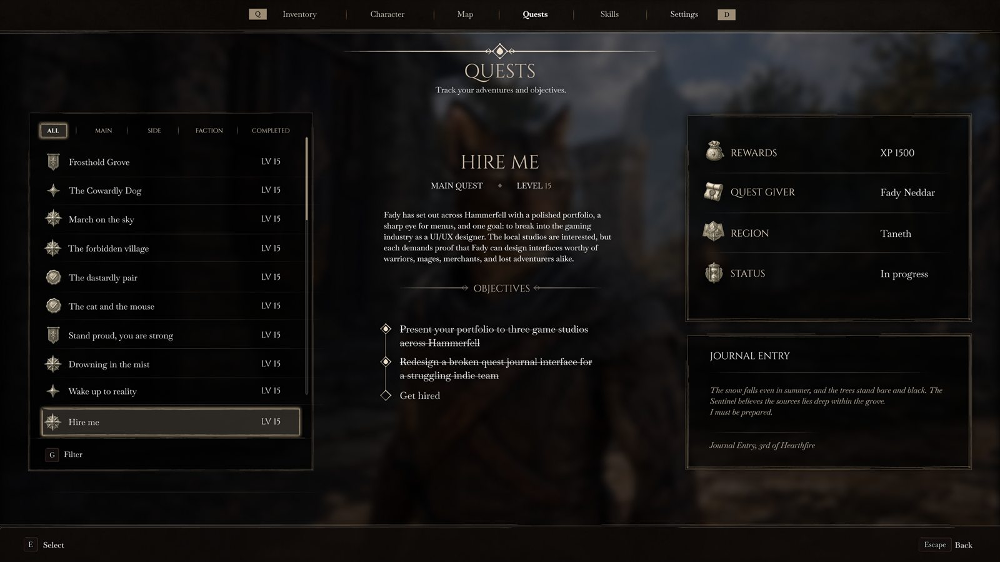
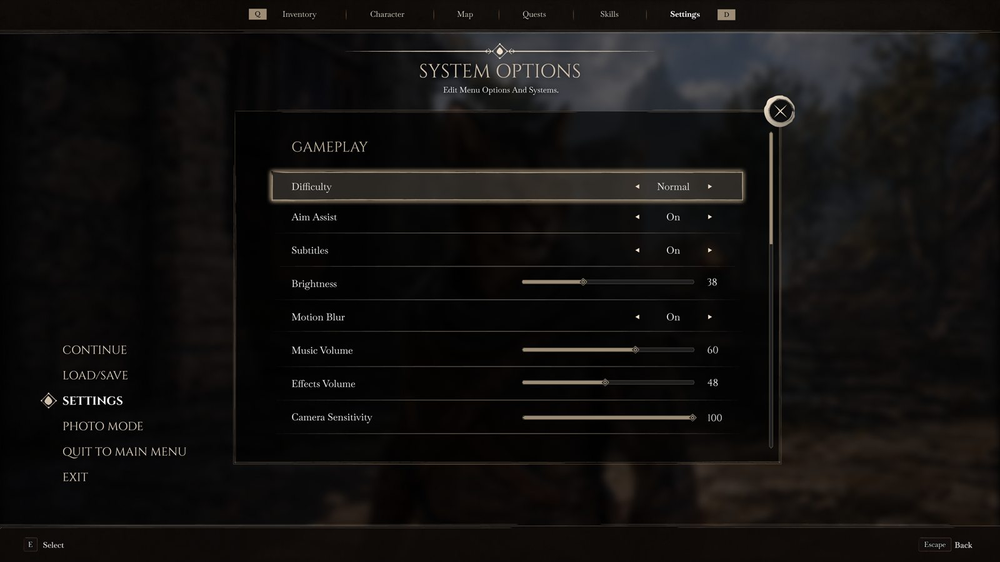
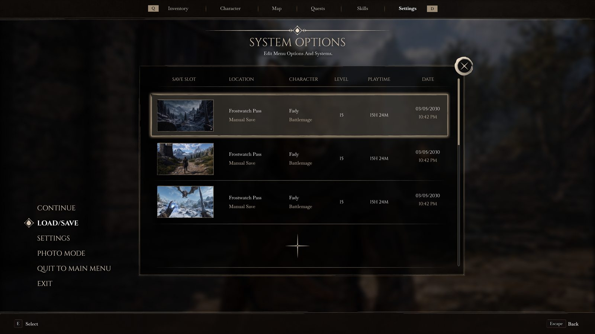

Large RPG systems need depth without burying core actions behind unclear menu layers.
Elder Scrolls VI Interface Concept
Complex interface concept / RPG systems
Interface concept for a large RPG system with inventory, quests, map, HUD, pause menus, and system settings.
The goal was to preserve world identity while making dense RPG information easier to scan.
The redesign organizes RPG decision-making around readable systems while keeping the world identity intact.
Design process
Jump to a stage of the case study.
Final output preview
Interface screens for pause navigation, inventory, character, skills, quest, map, and HUD systems.
Drag / scrollLarge RPGs need deep systems without burying inventory, quest, map, and HUD decisions.
Use one pause layer, clearer categories, readable tables, and restrained HUD hierarchy.
The concept shows complex system organization with stronger scanning and franchise atmosphere intact.
The Problem
Deep systems need faster scanning.
Elder Scrolls players expect atmosphere, depth, and readable information at the same time. The concept keeps the series feeling old-world, but removes the friction that makes big RPG systems slow to scan on PC.
Nested Menus
Major actions can sit behind multiple steps when players need fast access during exploration.
Inventory Density
Weapons, armor, books, potions, and quest items need strong filtering without losing the RPG feel.
PC Readability
Mouse and keyboard users need clearer hit areas, faster category switching, and readable stat comparison.
HUD Restraint
The interface has to show health, stamina, magic, compass, and prompts without fighting the world.
Key Insight
Atmosphere still has to work fast.
The concept was shaped around recurring Elder Scrolls community requests: atmosphere, fewer clicks, and better PC-first interaction.
"Skyrim's default UI is so poorly optimised for PC. I have never gone back since I got SkyUI."
ThirdStreetSeren, r/ElderScrollsDesign responseThe tab bar navigation and keyboard-first layout means the ES6 UI works properly on PC without needing a mod to fix it. No console-port compromises.
"Oblivion is a submenu fest that takes a while to get back used to."
ThirdStreetSeren, r/ElderScrollsDesign responseEvery screen is one tab away from any other. There are no nested menus. You open the pause menu and everything is already visible across the top bar.
"I liked being able to see every magic effect on me at a glance in Morrowind, without going several pages into the menu like Skyrim."
lydiardbell, r/ElderScrollsDesign responseActive effects are shown directly on the Character screen with timers visible. No extra clicks, no digging through menus mid-combat to see what is debuffing you.
"Oblivion has so much character. Skyrim's UI has the aesthetics but no soul. Bethesda should hire whoever did SkyUI."
bmgarcia20 + InBlurFather, r/ElderScrollsDesign responseThe UI uses a consistent visual language rooted in ES lore, from the diamond selection icon to the aged parchment map. It should feel like it belongs in this world, not borrowed from another game.
The Flow
One pause layer. Clear exits.
The pause menu acts as the hub. Inventory, character, map, quests, skills, and system settings stay one step away.

System Logic
The concept is built around information architecture, not just atmosphere.
The visual direction supports the world, but the structure is intentionally practical: every major system is one step from pause, and every dense screen is grouped by player task.
One pause hub
Character, Inventory, Map, Quests, Skills, Settings, and Load/Save stay close instead of hiding in nested families.
Scan first, inspect second
Rows support quick comparison, while the detail panel gives depth after the player has selected an item.
Task, story, reward together
The quest screen keeps objective, context, region, reward, and journal text on the same screen.
World first
Permanent UI sits on the edges, leaving the center of the screen open for exploration and combat reads.
Final Design
Main menu and pause hub.
The entry screens use large typography, quiet motion, and parchment-like surface contrast without turning the interface into decoration.
01 - Launch Flow
Press Start
Screen A title beat with the logo, one start prompt, and a dark illustrated backdrop.
Decision The logo gets room before the practical menu appears, so the first screen feels like a door into the world.
Fix It creates a stronger first impression without adding choices before the player has started.
02 - Launch Flow
Main Menu
Screen A left-aligned menu for Continue, Load, Settings, Credits, and Exit.
Decision Serif type, a selection diamond, and warm texture keep the menu old-world while the list stays easy to scan.
Fix It keeps the Elder Scrolls mood without making the first usable screen feel heavy or overbuilt.
03 - Pause Layer
Pause Hub
Screen A pause layer over the live world, with Continue, Load/Save, Settings, Photo Mode, Quit, and Exit available from one screen.
Decision The world stays visible but softened. System actions sit on the left, while the top bar keeps the main RPG tabs close.
Fix Pausing stops feeling like a dead black screen, and players do not lose where they came from.
Final Design
The world stays behind the interface.
The pause layer keeps the game scene visible behind the system menu, so the player does not feel pulled into a disconnected screen.
01 - In-Game Layer
Pause over the world
Screen System options appear over the game scene instead of cutting to a disconnected black menu.
Decision The world is softened behind the interface, but player context remains visible.
Fix The pause state still feels part of the game, not a separate utility screen.

02 - Gameplay HUD
Quest + Combat Readability
Screen The same HUD in a darker exploration scene, with weapon, shield, compass, quest list, and resources visible.
Decision Thin anchored elements survive busy landscapes without becoming a full overlay.
Fix Quest direction and player status stay readable when subtle fantasy UI can easily disappear.
Final Design
RPG systems grouped by task.
The pause tabs are heavier than the HUD because this is where players compare, read, equip, track, and make decisions.
01 - Pause Tab
Inventory
Screen A category inventory with item rows in the center and a full item detail panel on the right.
Decision Left icons give quick category jumps. The center table keeps name, damage, weight, and value aligned for scanning.
Fix It avoids the slow single-list problem. Players get a proper scan-and-compare layout.
02 - Pause Tab
Character
Screen Character overview for race, level, XP, attributes, build identity, skill totals, resistances, and active effects.
Decision Main stats sit in the center, with secondary info in right-side cards and effects visible without another page.
Fix Players can read their build and current status in one place.
03 - Pause Tab
Map
Screen A parchment-style Hammerfell map with the current objective pinned beside it.
Decision The map feels like an object from the world, while the top navigation still behaves like a modern system.
Fix Location and quest context stay together, so players know where they are going and why.

04 - Pause Tab
Quests
Screen A quest journal with filters, quest text, objectives, rewards, giver, region, status, and a journal entry.
Decision Browsing, reading, and reference each get a column: list left, story center, details right.
Fix Quest tracking becomes more than a thin checklist. The task, reward, and story are readable together.
05 - Pause Tab
Skill Tree
Screen A full skill tree with Combat, Exploration, Stealth, Gathering, and Crafting shown side by side.
Decision Columns replace deep categories so players can compare paths at a glance.
Fix Leveling feels less buried. Players see the shape of their build without entering a chain of submenus.

06 - System Screen
Settings
Screen Gameplay settings with difficulty, aim assist, subtitles, brightness, motion blur, audio, and sensitivity controls.
Decision Long rows with values on the right support fast keyboard and mouse movement without tiny widgets.
Fix Settings stay readable and consistent instead of feeling like a separate launcher menu.

07 - System Screen
Load / Save
Screen A save browser with screenshot thumbnails, location, character, level, playtime, and date.
Decision The thumbnail leads each row because players remember where a save happened before they remember the timestamp.
Fix It removes guesswork from save slots and makes load/save feel like part of the adventure record.
Accessibility & Input
A fantasy interface still needs modern usability options.
The next pass should treat accessibility as part of the system, not a settings afterthought.
Text scaling and contrast modes — Inventory, quest text, subtitles, and item stats need readable size options without breaking layout.
Keyboard, mouse, and controller paths — Navigation should work with quick shortcuts, clear focus states, and large controller-friendly targets.
Reduced and expanded HUD modes — Players should be able to lower HUD noise during exploration and reveal more detail when needed.
What Changed
Readable depth without losing identity.
One hub before deep systems
The pause menu keeps every major RPG area one step away.
Fantasy surface, modern control
The UI keeps Elder Scrolls atmosphere while using PC-friendly targets and fast scanning.
Inventory is a workspace
The densest screen gets the strongest structure because players spend real time there.
Reflection
What I would test next.
The concept should be validated through navigation tasks, inventory scanning, and HUD readability in bright and dark scenes.
Fantasy UI still needs product logic — Strong visual identity works better when the structure is boringly clear underneath.
Inventory and quest tasks — I would test finding, comparing, tracking, and returning from common RPG actions.
Accessibility states — The next pass should cover subtitles, contrast modes, remapping, and HUD scaling.